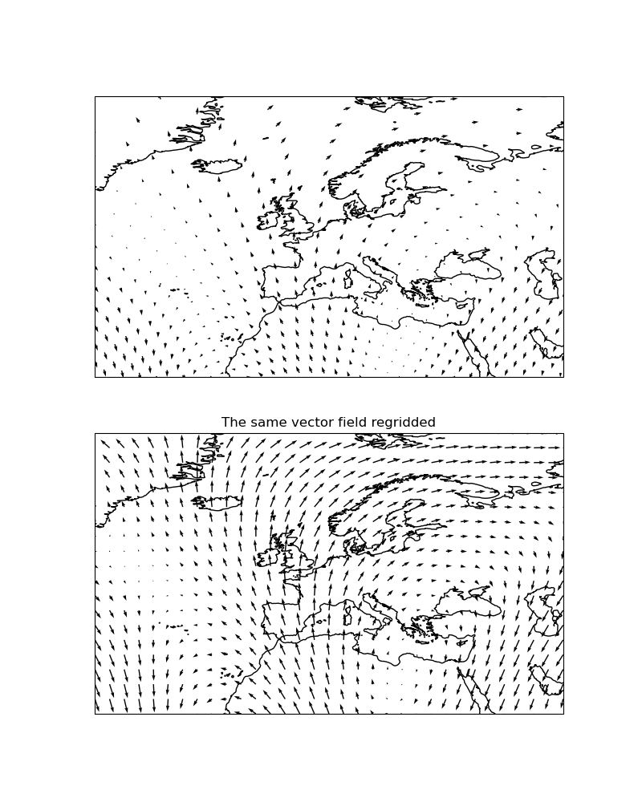

Note
Click here to download the full example code
Regridding vectors with quiver¶
This example demonstrates the regridding functionality in quiver (there exists
equivalent functionality in cartopy.mpl.geoaxes.GeoAxes.barbs()).
Regridding can be an effective way of visualising a vector field, particularly if the data is dense or warped.
import matplotlib.pyplot as plt
import numpy as np
import cartopy.crs as ccrs
def sample_data(shape=(20, 30)):
"""
Return ``(x, y, u, v, crs)`` of some vector data
computed mathematically. The returned CRS will be a North Polar
Stereographic projection, meaning that the vectors will be unevenly
spaced in a PlateCarree projection.
"""
crs = ccrs.NorthPolarStereo()
scale = 1e7
x = np.linspace(-scale, scale, shape[1])
y = np.linspace(-scale, scale, shape[0])
x2d, y2d = np.meshgrid(x, y)
u = 10 * np.cos(2 * x2d / scale + 3 * y2d / scale)
v = 20 * np.cos(6 * x2d / scale)
return x, y, u, v, crs
def main():
fig = plt.figure(figsize=(8, 10))
x, y, u, v, vector_crs = sample_data(shape=(50, 50))
ax1 = fig.add_subplot(2, 1, 1, projection=ccrs.PlateCarree())
ax1.coastlines('50m')
ax1.set_extent([-45, 55, 20, 80], ccrs.PlateCarree())
ax1.quiver(x, y, u, v, transform=vector_crs)
ax2 = fig.add_subplot(2, 1, 2, projection=ccrs.PlateCarree())
ax2.set_title('The same vector field regridded')
ax2.coastlines('50m')
ax2.set_extent([-45, 55, 20, 80], ccrs.PlateCarree())
ax2.quiver(x, y, u, v, transform=vector_crs, regrid_shape=20)
plt.show()
if __name__ == '__main__':
main()
Total running time of the script: ( 0 minutes 0.671 seconds)